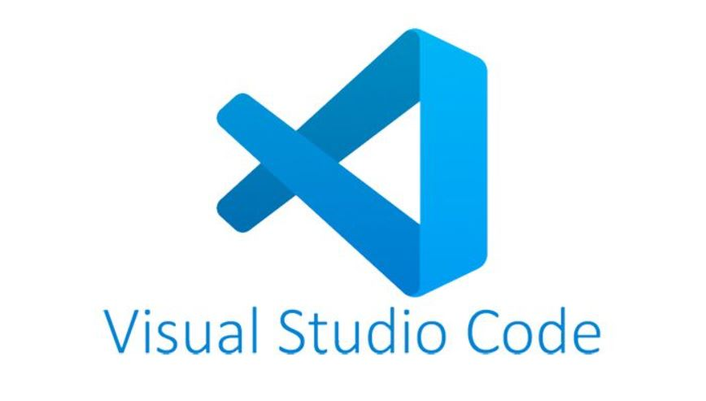

البرمجة
-
تعريف البرمجه
-
البرمجة هي عملية كتابة تعليمات وتوجيه أوامر لجهاز الحاسوب أو أي جهاز آخر مثل قارئات أقراص الدي في دي أو أجهزة
استقبال الصوت والصورة في نظم الاتصالات الحديثة، لتوجيه هذا الجهاز وإعلامه بكيفية التعامل مع البيانات أو كيفية
تنفيذ سلسلة من الأعمال المطلوبة تسمى خوارزمية.
وتتبع عملية البرمجة قواعد خاصة باللغة التي اختارها المبرمج. وكل لغة برمجة لها خصائصها التي تميزها عن الأخرى
وتجعلها مناسبة بدرجات متفاوتة لكل نوع من أنواع البرامج وحسب المهمة المطلوبة من هذا البرنامج. كما أن اللغات
البرمجية أيضا لها خصائص مشتركة وحدود مشتركة بحكم أن كل هذه اللغات صممت للتعامل مع الحاسوب. وتتطور لغات البرمجة
(السوفتوير Software) بتطور عتاد الحاسوب المرئي (الهاردوير Hardware). فعندما ابتكر الحاسوب في الأربعينيات
والخمسينيات من القرن الماضي (بعد أجهزة الحساب الكهربائية في العشرينات) - وكان الكمبيوتر يعمل بأعداد كبيرة من
الصمامات الإلكترونية - كانت لغة البرمجة معقدة هي الأخرى، حتى أنها كانت عبارة عن سلسلة من الأعداد لا يدخلها إلا
الصفر (0) والواحد (1) وذلك لأن الحاسب يفهم حالتين فقط وجود التيار (1) أو عدم وجوده (0)، وكان ذلك صعبا على
المبرمجين. ولكن بابتكار الترانزيستور صغر حجم الحاسوب كثيرا وزادت إمكانياته، واستطاع المختصون في نفس الوقت أن
يبتكروا لغات أسهل للاستخدام، وأصبحت لغات البرمجة مفهومة إلى حد بعيد للمختصين. ولا يزال التطوير والتسهيل جاريا
وتسمى هذه اللغات سهلة التعامل بالنسبة للمبرمجين باللغات عالية المستوى.
-
امثله على لغات البرمجة
-
:مثلة لبعض لغات البرمجة للحاسوب عالية المستوى
- سي
- سي بلس بلس (سي++)
- سي شارب (سي #)
- جافا
- ليسب
- برولوغ
- بايثون
- فورتران
- روبي
- أدا
- دلفي
- بيسك
- كوبول
- باسكال
- إس كيو إل
- بي إتش بي
- جافا سكربت
- جيم
- لغة لوغو Logo
- أطلس أوتوكود
- لغة دارت
-
-
افضل مواقع لتعلم لغات البرمجه
رايي الشخصي

W3Schools:موقع
- ومن افضل برامج لي كتابه الاكواد

Visual Studio Code
Visual Studio Code:شرح مفصل عن برنامج
nashmi